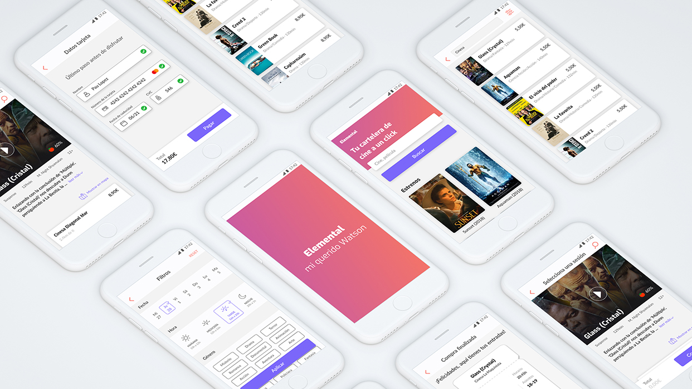
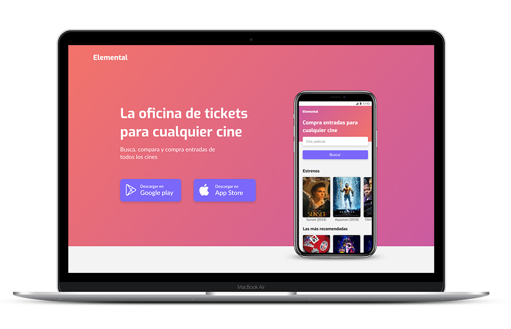

Elemental
Mobile & Tablet App
An app that groups all cinema related information in a single place. ELEMENTAL improves in a digital way the experience of cinema. Research, User histories, Design & Prototype
Common Project with José Garza, Lijie Ye Hu & Carolina Sánchez
Challenge
Improve in a graphic way the cinema experience
Research
When the challenge was given to us, we didn’t know how to improve the cinema experience so we decide to interview people in different cinemas at different times and after different movie genre to have a complete perception of what different cinema users think about it.
It was a great experience were we learn a lot about why people like cinema and what they think it can be done better.
After more than 100 interviews in 15 different cinemas we where able to determine the archetypes and the journey that they do in the whole process that cinema involves.
Archetypes
We found three major archetypes we wanted to address and help improving their cinema experience. Those are “social technological”, “family” and “the smarty”. All with their own pains and needs.

Journey Map
Social Technological Archetype
Family Archetype
The Smarty Archetype
Moments of Truth
Pains & Opportunities
Value and viability matrix
After discovering the moments of truth, pains and opportunities we start to think about posible solutions. Once we had them it was time to prioritize them following two criteria: value and viability. These are the ones that had the greatest value and viability:
Wireframes
To start making functional prototypes in order to test all the functionalities and the user flow.

Final product
**Overview with different screens and functionalities**

Advertisign in Social Media
Different examples of advertising on different digital channels.
Landing Page
To make more visible the platform and announce all our advantages and problems we solved we decided to launch also a landing page.
6825f
Video for Sonar 2010
In 1952, John Cage, an American composer, created a musical work, which can be interpreted by any instrument, in any form, and by any individual. In the work titled 04:33, the performers sit silently before their instruments throughout the performance. The sounds of the environment make up the music. The artist demonstrates the absence of silence.
6825f, is a visual interpretation of his work by enlarging body parts, and listening to the sounds they produce during 6,825 frames (4min 33s.) The unconnected and inaudible sounds of the individual are those that generate music, apparently imperceptible, but eternal.